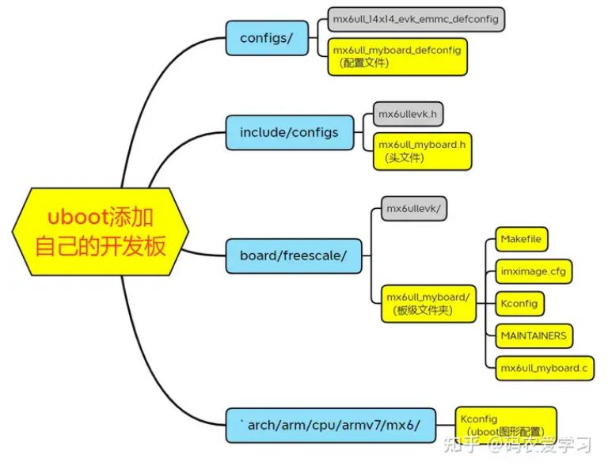
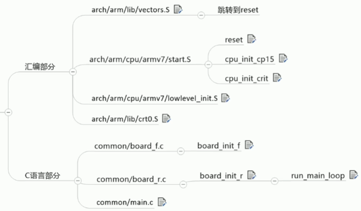

03 U boot移植及分析
U-Boot移植
去哪下载源码
移植uboot分为2种境界：
- 1.芯片原厂为自己的demo板修改uboot的官方源码；
- 2.自制开发版时，为自己的板子修改原厂demo板或者别的参考开发板的uboot源码
我们如果不是在芯片原厂上班，那么就不需要去uboot官方仓库下载源码，直接找到自己使用的芯片厂商所提供的uboot就行了，后续我们的移植都是对其demo板子的uboot源码的修改
在源码中添加自己的开发板
下图是比较旧的uboot版本，新版uboot引入了设备树来描述板级信息，而原始的uboot板级信息和驱动都写在
mx6ull_myboard.c里面

主要流程如下：
1.添加自己开发板的配置文件mx6ull_myboard_defconfig
2.添加自己开发板的头文件mx6ull_myboard.h
3.添加自己开发板的对应的板级文件夹board/freescale/mx6ull_myboard
4.修改板级文件夹中的各个配置文件
5.修改板级文件夹中的BSP文件mx6ull_myboard.c（具体要修改什么依自己开发板的原理图来定，如何自己开发板的原理图和官方demo板的一致，就不需要改，如果自己的开发板和demo板差别较大，就要改更多东西）
uboot的一般包含DDR、串口、LCD、NAND、EMMC、SD卡、网络等模块的驱动，所以我们在BSP中一般是针对这些模块进行裸机驱动的修改
具体流程看网上的教程：
- i.MX6ULL嵌入式Linux开发2-uboot移植实践 - 知乎 (zhihu.com)
- u-boot移植：详细讲解移植u-boot.2022.10版本到imx6ull开发板_6ull uboot2022-CSDN博客
- i.MX6ULL - 从零开始移植uboot-imx_v2020.04_5.4.70_2.3.0-CSDN博客
源码编译
uboot编译时一般包含以下几个步骤：
- 1.清空之前的东西
- 2.加载默认配置
- 3.编译
最好把步骤写成Shell脚本，免得后边忘记了
1 | make ARCH=arm CROSS_COMPILE=arm-linux-gnueabihf- distclean |
编译产物
这里只列举出比较重要的
- u-boot.lds：链接脚本，给出了uboot的各部分放在什么地址
- u-boot.bin：这是编译后的 U-Boot 核心程序的二进制文件，可以使用imxdownload工具下载到SD卡
- u-boot.cfg：保存了ddr的配置信息，供ROM读取来初始化内存
- u-boot.imx：对于u-boot.bin进一步封装，在头部加上了u-boot.cfg。使用imxdownload工具下载时，实际上是先转成了这种格式，再下载到SD卡里的。如果是使用其他方法下载到SD卡，就得用这种格式
- u-boot-dtb.bin：编译后的u-boot核心程序 + 设备树的二进制文件
- u-boot-dtb.imx：编译后的u-boot核心程序 + 设备树的二进制文件，并转换成了imx6ull支持的格式
下载到开发板
- 方式一：使用NXP官方提供的下载工具imxdownload将**.bin**文件下载到SD卡中：
1 | chmod 777 imxdownload # 给予 imxdownload 可执行权限，一次即可 |
- 方式二：使用Ubuntu自带的指令下载**.imx**文件到SD卡中
1 | sudo dd if=u-boot-dtb.imx of=/dev/sdb bs=512 seek=2 conv=sync |
U-boot的使用
常见命令
| 命令 | 作用 |
|---|---|
| pintenv | 打印环境变量 |
| setenv | 设置某个环境变量 |
| saveenv | 保存环境变量 |
| boot | 执行bootcmd环境变量，加载内核 |
| bootz <内核地址> [ |
从内存中指定地址启动Linux内核 |
环境变量的设置
bootcmd(启动命令)
功能：定义了在U-Boot启动时自动执行的命令(手动执行boot指令也是运行这个). 通常用于自动引导操作系统或加载内核镜像
作用：U-Boot启动后，会执行bootcmd中定义的命令，通常这包括从某个存储介质（如Flash、SD卡或网络）加载内核镜像、设备树文件和根文件系统镜像，然后引导内核启动
示例：
1 | setenv bootcmd 'tftp 80800000 zImage; tftp 83000000 imx6ull-alientek-emmc.dtb;bootz 80800000 - 83000000;' |
可以看到，I.MX6ULL在启动时，首先从tftp服务器下载zImage和设备树文件到指定的内存中，然后使用
bootz命令启动Linux内核
bootargs(启动参数)
功能：传递给内核的启动参数，通常用于指定根文件系统、控制台、日志级别等。内核启动时会解析这些参数并根据配置做出相应设置
作用：==影响内核启动时的行为==。例如，指定根文件系统的位置、传递命令行参数给内核控制台、设置日志输出的详细级别等
示例：
1 | setenv bootargs = ‘console=tty1 console=ttymxc0,115200 root=/dev/nfs nfsroot=192.168.137.100:/home/lrq/linux/nfs/qtrootfs,proto=tcp,v3 rw ip=192.168.137.50:192.168.137.100:192.168.137.1:255.255.255.0::eth0:off’ |
内核是如何获取bootargs
- 并不是直接读的uboot的
bootargs环境变量，而是uboot会把他的bootargs环境变量先写入设备树的chosen节点，内核通过该节点获取启动参数的 - 内核启动后，可以通过
cat /proc/cmdline查看启动参数！
网络参数
当使用tftp、nfs时，在uboot中还要设置一些与网络相关的环境变量
示例：
1 | setenv ipaddr 192.168.137.50; |
启动流程分析
开发板的启动流程可以分为以下3个阶段
1.ROM引导阶段（BL1）
- 执行主体：芯片内部ROM代码
- 功能：
- 初始化CPU基础环境（如时钟、异常向量表）
- 从预定义的启动设备（如eMMC、NOR Flash、SD卡等）加载BL2（通常是SPL或U-Boot的前导代码）到SRAM中运行
- 验证BL2的完整性（如通过签名校验）
2.SPL阶段（BL2）
执行主体：U-Boot SPL，在SRAM中运行，主要是汇编实现
功能：
- 关闭中断、看门狗、MMU、Cache，保证uboot稳定运行
- 让CPU进入SVC模式，获得更高的操作权限
- 基本硬件的初始化：时钟、串口、flash、DDR
- 初始化堆栈，准备C语言的运行环境
- 自搬移：将uboot主程序(
uboot.bin)从flash搬移到DDR，并进行代码的重定位以及跳转到BL3
3.U-Boot主程序阶段（BL3）
执行主体：
uboot.bin，在DDR中运行，主要是C语言实现功能：
- 完成网卡、usb、屏幕之类的硬件的初始化
- 加载内核镜像、设备树到内存中
- 设置环境变量、启动参数，执行预定义的引导命令（
bootcmd环境变量里的命令）或进入交互式模式来启动内核
